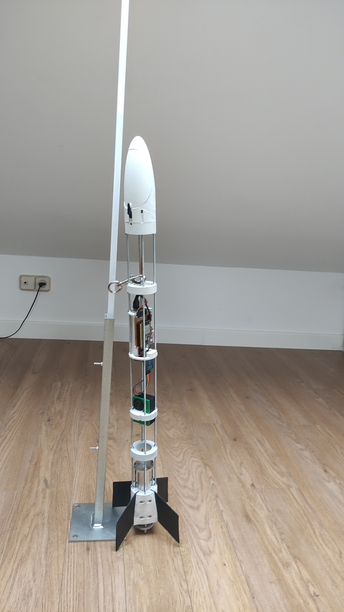

Trivera S.C.
Sigma v2 Is our latest rocket disinged and manufactured by us, made to be a prototype to implement our own thrust vectoring control system.
January 2021
1st SUCCESFULL ENGINE
This is the first succefull protype of our sugar rocket. After more than 10 failed tests, this success gave us the courage to continue with this project.
It was launch the 3rd of January of 2021
April 2022
SIGMA V1
+ info
Sigma V1 is our first rocket based on a disinged made by us with on
board computer for telemetry and parachute ejection system
It was launched the 2nd of april of 2022
December
2021
2021
SIGMA V2

Sigma V2 is our latest design, made to solve all the problems we had with sigma V1 and widen the range of possibilities. This new design fixes problems such as the inner space limitations, parachute ejection system, ease of fixing problems with any module, etc . With this, we also added the ability to have easy access to the modules inside, control roll mid-flight, and more.
It is currently under development.